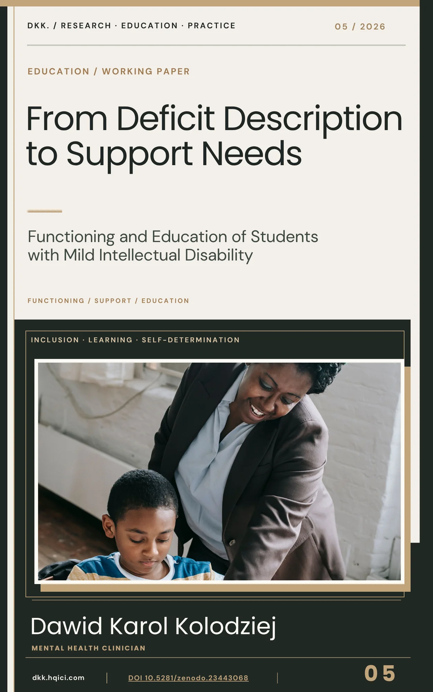
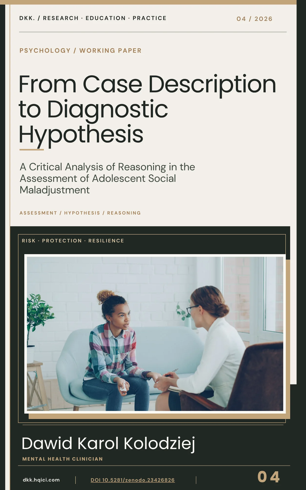
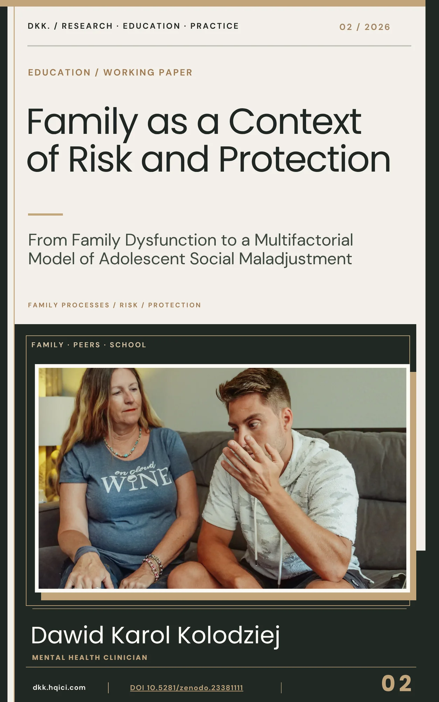
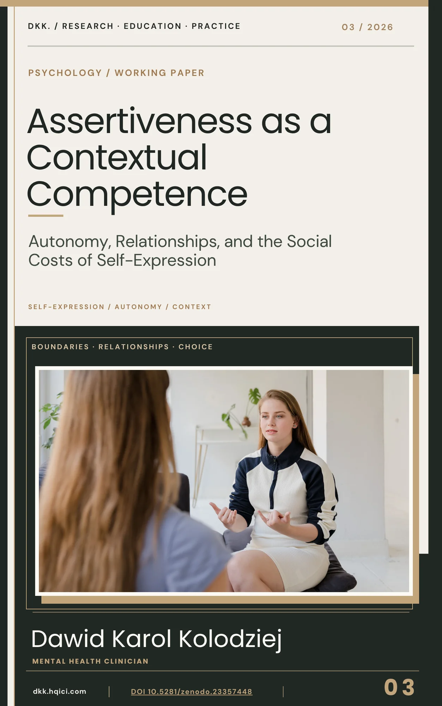
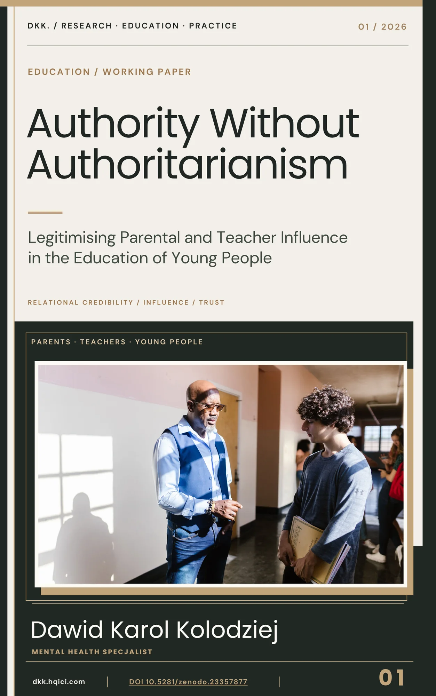

ARTYKUŁY · BADANIA · KSIĄŻKI
Badania.
Publikacje.
Zbiór artykułów, opracowań badawczych, opracowań roboczych, książek i tekstów edukacyjnych. Otwórz publikację, aby poznać jej kontekst, źródło i dostępne wydania.
WYBRANE Z KOLEKCJI
Wyróżnione publikacje
PEŁNE ARCHIWUM / INDEKS 001
Odkryj
publikacje.

Od odbiorcy mediów do krytycznego obywatela
Ewolucja mediów, dezinformacja, deepfake’i i odpowiedzialność informacyjna

Od rozpoznawania emocji do kompetencji społecznych
Zintegrowane rozwijanie komunikacji, relacji rówieśniczych i umiejętności codziennych
Od diagnozy do konceptualizacji przypadku
Integracja informacji diagnostycznych w kontekstowym rozumowaniu klinicznym

Od deficytów do potrzeb wsparcia
Od opisu trudności do funkcjonowania i praktycznego wsparcia

Od przypadku do hipotezy diagnostycznej
Rozumowanie diagnostyczne, interpretacja i osąd specjalisty

Rodzina, ryzyko i ochrona
Procesy rodzinne i wieloczynnikowe ujęcie rozwoju młodzieży

Asertywność jako kompetencja kontekstowa
Opracowanie robocze dotyczące asertywności, relacji i autonomii

Autorytet bez autorytaryzmu
Opracowanie robocze poświęcone autorytetowi wychowawczemu i uzasadnionemu wpływowi
Brak pasujących publikacji. Zmień wyszukiwanie.
Biblioteki cyfrowe
Biblioteki cyfrowe
Przeglądaj publikacje w bibliotekach autora i repozytorium Zenodo.